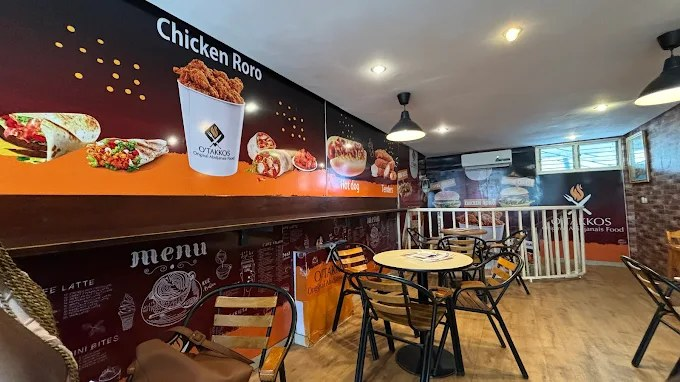
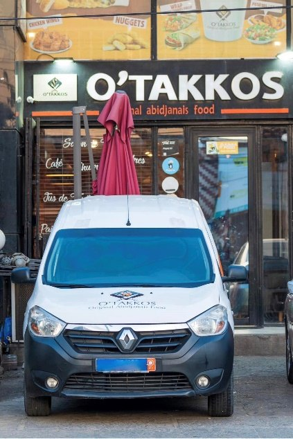
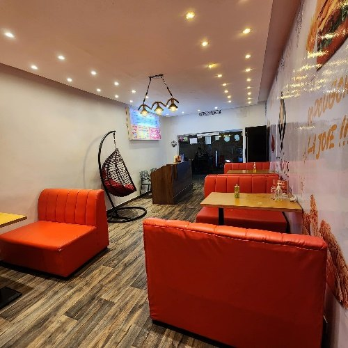
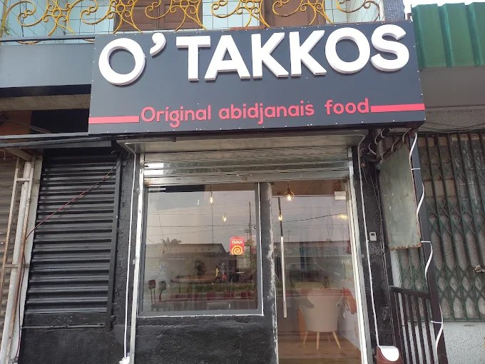
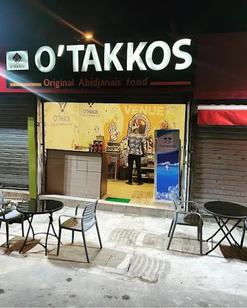
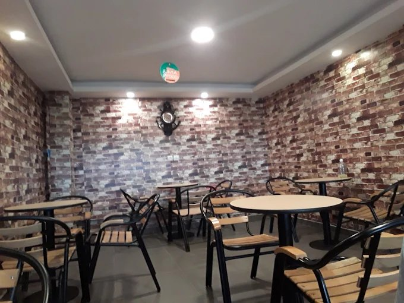

À Abidjan
5
adresses
100%
gourmand
Abidjan
proximité
Nos restaurants
Retrouvez l'expérience O'Takkos dans plusieurs quartiers d'Abidjan. Chaque adresse garde le même esprit : des recettes généreuses, un service rapide et une ambiance chaleureuse.


II Plateaux
O'Takkos Angré
Situé non loin du carrefour Opéra, II Plateaux.

Yopougon
O'Takkos Yopougon
Situé au niveau de Yopougon Maroc Antenne.

Marcory
O'Takkos Marcory Résidentiel
Situé non loin du stade Robert Champroux.

Zone 4
O'Takkos Zone 4
Situé non loin de l'hôtel Ibis Styles.

Faya
O'Takkos Faya
Une adresse O'Takkos pensée pour vos pauses gourmandes et vos moments entre amis.
Commande et livraison
Commander sur WhatsApp
Envie de O'Takkos maintenant ?
Contactez-nous sur WhatsApp pour connaître le restaurant le plus proche et passer commande.